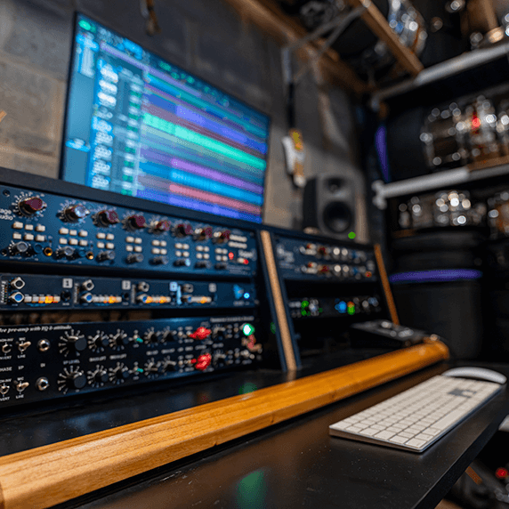
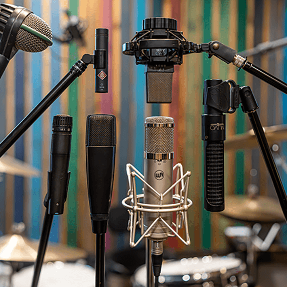
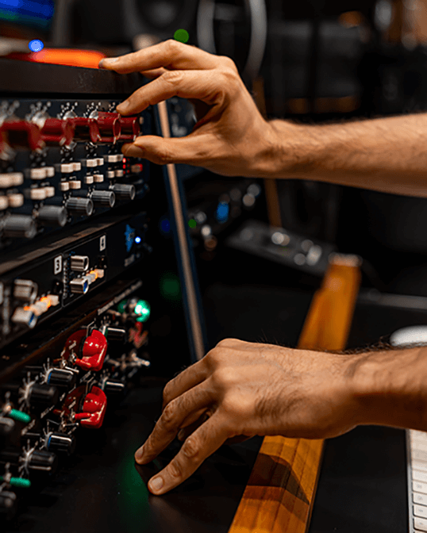
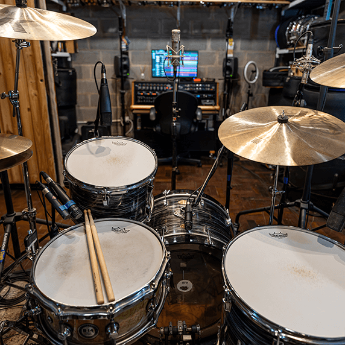
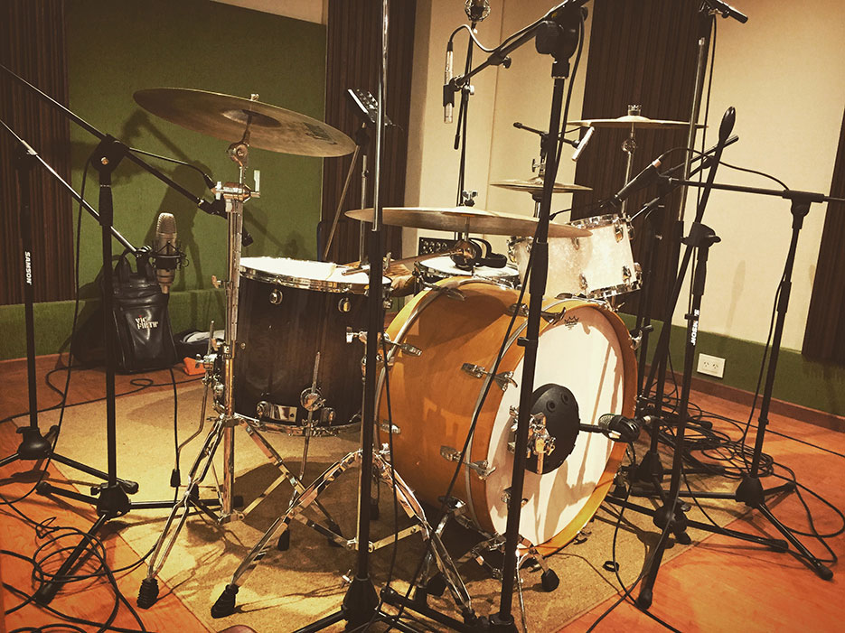
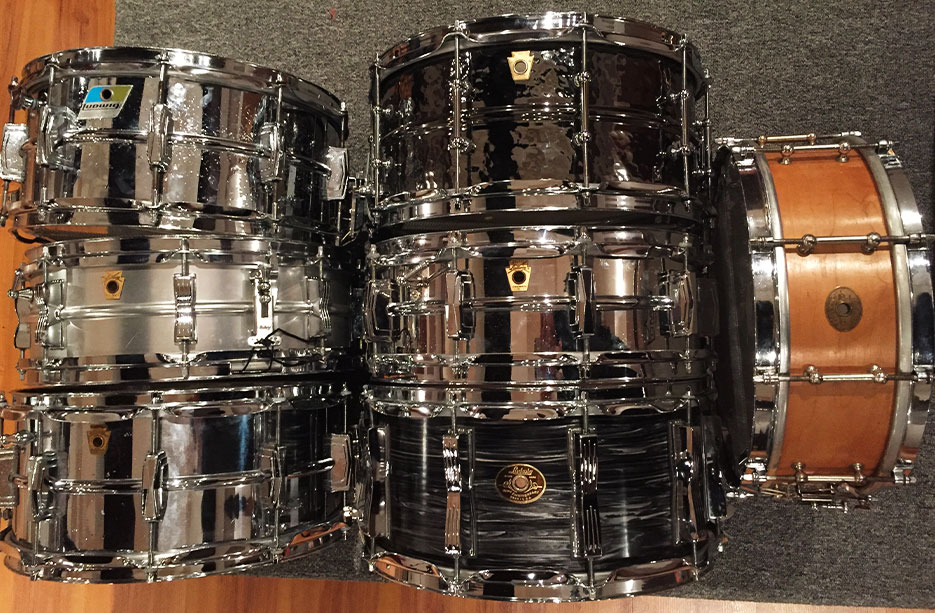
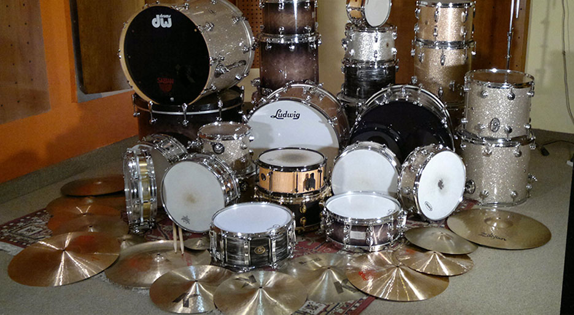
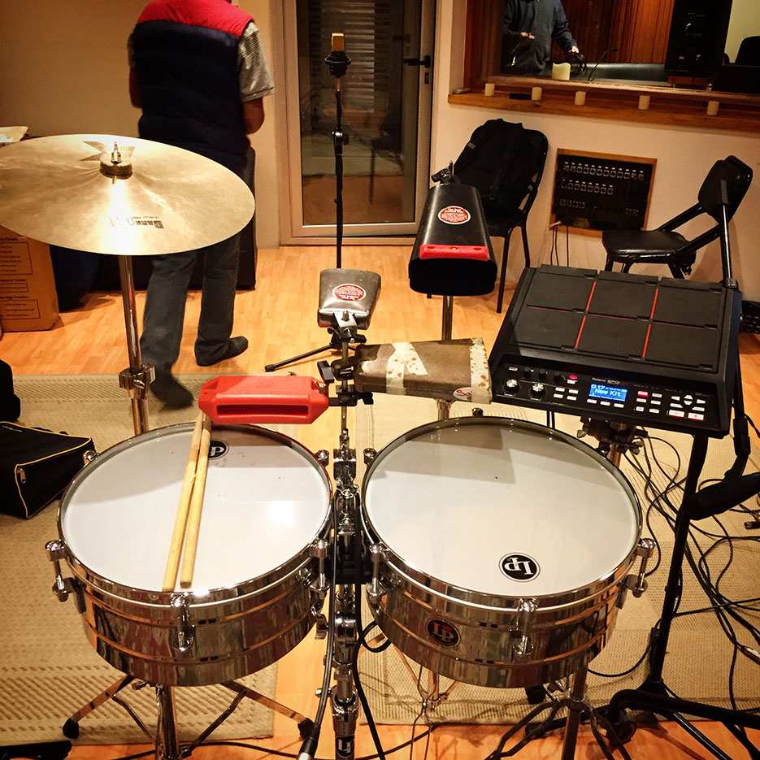

Comencé a tocar la batería a los 11 años. A partir de entonces, fui sumando experiencias musicales de todo tipo, incluyendo mis primeros pasos en estudios de grabación, donde realicé mi primera sesión como baterista a los 13. Soy oriundo de Córdoba, Argentina, y me gradué en la Escuela de Música Popular LA COLMENA, donde estudié armonía, arreglos y batería, además de instrumentos complementarios como piano, guitarra y bajo. Me formé también con destacados maestros como Hugo Ordanini (Tambor, Músicos del Centro, Piero, Pimpinela), con quien perfeccioné mi técnica, heredera del legendario Murray Spivack. También tomé clases con Palín Sosa, Oscar Giunta, Pipi Piazzolla, entre otros. Desarrollé una carrera sólida en Córdoba, tocando con numerosos artistas y bandas reconocidas de la escena local, como The Greets, Planeador V, entre otras. Combiné mi labor como baterista con sesiones de grabación y trabajos como Drum Doctor. A lo largo de mi carrera he tenido el privilegio de grabar con muchos artistas y productores de renombre, como Juan Blas Caballero, Jorge Rojas, Richard Coleman, entre otros. Estas experiencias me permitieron adquirir una gran formación en estudio y desarrollar una versatilidad que me permite adaptarme con naturalidad a distintos géneros, proyectos y contextos musicales. Gire junto a Airbag, L-gante, Coki Ramirez, Ariel Ardit, Horacio Banegas entre otros artistas de diferentes generos lo que refleja aun mas mi versatilidad como baterista. Actualmente resido en la Ciudad Autónoma de Buenos Aires, donde tengo mi propio estudio de grabación. Desde allí realizo grabaciones de forma remota para distintas partes del país y del mundo, además de trabajos como Drum Doctor para colegas. También participo activamente en proyectos en vivo de distintos estilos —rock, folclore, tango— siendo mi banda principal Rayos Láser. Además, formo parte del homenaje a Serú Girán junto a Pedro Aznar y David Lebón, dos referentes fundamentales del rock argentino.
Baterista de sesión, tours, drumdoctor y productor.
Baterista de sesión, tours, drumdoctor y productor.
El estudio esta pensado como un espacio versátil y profesional, donde tus canciones y producciones van a cobrar sentido. Cuento con 18 canales premium para capturar cada detalle de la batería. Además, dispongo de 7 baterías, 25 tambores y 40 platillos, que aportan variedad y carácter a tus canciones, elevando tanto la ejecución como el sonido final.
¿Sos baterista y tenés que grabar?
Ofrezco el trabajo de técnico y DrumDoctor para que vengas solamente con sus palos a grabar!




EL ESTUDIO
BATERÍAS

Mapex Orion Series

Ludwig 90th Anniversary

Ludwig Super Classic 1965

DW Collectors Series

Sonor Prolite Series

Otros
SNARES

Ludwig, Dw, Slingerland, etc
PLATILLOS

Zildjian, Paiste, Sabian, etc
PERCUSIÓN

Ver más
RESEÑAS
¿Querés sumarte a esta lista?
¿CÓMO TRABAJO?
Charlemos
01
Envío de Material
Me envías las pistas de tus canciones junto con el BPM y la programación de batería que querés para cada tema. Si aún no tenés una idea definida de la batería, podemos trabajar juntos para crear una propuesta artística que se ajuste al espíritu de la canción.
02
Información Adicional
Es importante que los tracks estén a tempo y que me envíes un audio de referencia sobre cómo querés que suene la batería; puede ser un link de YouTube, Spotify, etc, para yo poder capturar la esencia y lograr el sonido que buscas
03
Entrega de Tracks
Una vez finalizada la grabación, puedo enviarte la sesión completa en ProTools, o bien los tracks separados en WAV listos para que los incorpores a tu DAW y empieces a mezclar.
PREGUNTAS FRECUENTES
¿Cómo voy a recibir los tracks?
Una vez finalizada la grabación, te enviaré la sesión completa en ProTools, o bien los tracks separados en WAV listos para que los incorpores a tu DAW y empieces a mezclar.
¿La maqueta tiene que estar sí o sí grabada con click?
Sí.
¿Cuántas tomas me mandás?
Todas las que hagamos.
¿Puedo hacerte devoluciones en el momento?
¡Claro! La idea es que vos estés del otro lado y yo te voy mandando por WhatsApp las tomas que voy haciendo para que me digas si te gusta el audio y lo que toco. Puedo cambiar todo lo que haga falta para que quedes conforme.
¿Si te mando una programación de batería MIDI y necesito que la toques tal cual, podés?
Sí, sin ningún problema.
¿Si mi producción no tiene los instrumentos finales, es un problema?
Para nada. Lo importante es que esté todo a tempo y que tengas en claro para qué lado va la producción, para yo poder interpretarla correctamente.
¿Cuántos canales me mandás?
Entre 16 y 18… depende del tipo de batería que use.
¿Me mandás las baterías mezcladas?
No, las baterías se mandan crudas, listas para mezclar.
¿Cuantizás las baterías?
No está incluido dentro de la grabación; es un servicio que cobro aparte.
¿Qué pasa si quiero hacer correcciones una vez que me mandaste los tracks?
Una vez que te mando los tracks, damos por finalizado el trabajo. Si querés hacer algún cambio después de que terminó la sesión, hay que agendar una sesión nueva y se cobra como una producción distinta. Por eso es importante que estés atento y me pidas todos los cambios que quieras mientras estamos grabando.
¿Puedo ir a tu estudio a presenciar la sesión?
Si estás en Buenos Aires, ¡más que invitado!